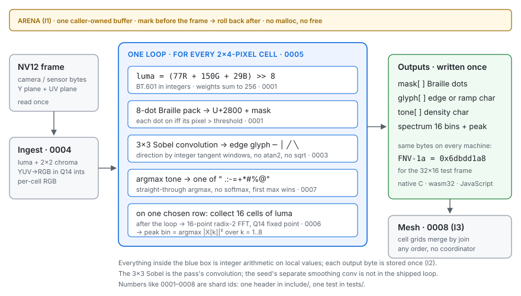

One pass from camera frame to readable signal.
Syzygy is a small C kernel that turns a video frame into Braille dots, edge glyphs and a 16-bin spectrum in a single loop, using only integer arithmetic. It gives the same bytes on a laptop, a phone and a microcontroller, so a stranger can check any result against one number.
- header-only C11
- no malloc, no floats, no libc
- 6.8 KB as WebAssembly
- same bytes in C, wasm and JS
Run it in this tab
Everything below is computed on your device, with no server involved. The same pass runs twice on every frame: once as the C kernel compiled to WebAssembly, once as an independent JavaScript port. The panel at the bottom tells you whether the two agreed, byte for byte.
A synthetic pattern of moving rings, 160×96 pixels, which becomes 80×24 cells.
Braille · 8 dots per cell
Edge glyphs · 3×3 Sobel
Tone · argmax density
Spectrum · 16-point integer FFT of one row
Two engines, one answer
What happens inside the pass
The frame is read once into a fixed buffer. One loop visits every 2×4-pixel cell and works out its brightness, its Braille dots, its edge direction and its density character, all from values kept in local variables. One row of cells also goes through a small Fourier transform. Each result is written once, and the buffer is handed back exactly as it was found.

include/ and one test in tests/. Read the stage-by-stage walkthrough.What the numbers let you do
Check someone else's result.Integer-only maths means a frame gives the same bytes on every CPU and compiler. The 32×16 test frame hashes to 0x6dbdd1a8 in native C, in WebAssembly and in JavaScript, so one number is enough to tell whether two devices saw the same thing.
Run where there is no runtime.No allocator, no floating point, no standard library. The same headers compile for a desktop, a 6.8 KB WebAssembly module with zero imports, and in principle a microcontroller.
Keep up with a live camera.The timing above is measured on your device. The pass has to fit in the time between display refreshes to keep up with a live camera, and it runs without a server round trip.
Share state without a coordinator.Grids of cells merge with a join that ignores order and duplicates, so devices that trade updates over a lossy link end up with the same picture without a server deciding who is right.
Read further
The README is the general introduction. Each deep-dive below is written for two readers: a newcomer, and someone about to change the code.
The whole story in one read: what it is, why integers, how to run it.
The front door: nouns, invariants and the contract.
Every stage of the loop, with its shortcuts.
I1 arena, I2 integer fusion, I3 merge without consensus, and the test behind each.
Bring the kernel up on a new target and prove it with the golden hash.
Mutation gauge, drift differ, wasm run: how the tests are themselves tested.
How a crew with no shared memory built this from a self-contradicting seed.
The seed resolved into one design, every contradiction named.
The original one-screen browser port with its 7 byte-exact checks.